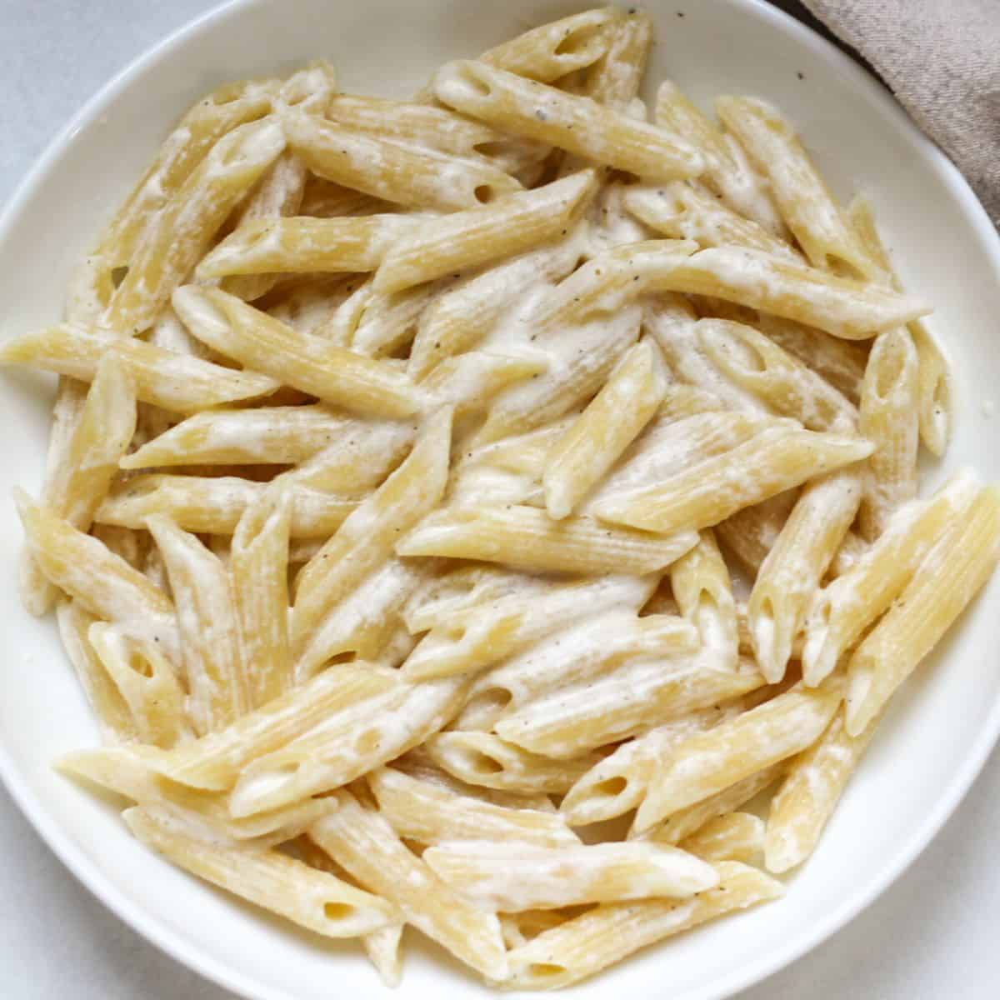

مواد لازم: پاستا،شیر،قارچ،خامه،مرغ
دستور پخت پاستا: برای تهیه پاستای ساده، ابتدا سینه مرغ و قارچها را خرد کرده و در روغن تفت دهید. در قابلمهای جداگانه، آرد و روغن را تفت داده و شیر را اضافه کنید تا سس غلیظ شود. پاستا را در آب جوش با سیر، نمک و روغن بپزید. پس از آماده شدن، پاستا را با مرغ و قارچ ترکیب کرده، سس و پنیر پارمزان را اضافه کنید و به مدت ۲۰ تا ۲۵ دقیقه بپزید. در نهایت، پاستا را در ظرف سرو کرده و با قطعات مرغ، جعفری خرد شده، پنیر پارمزان و گوجه گیلاسی تزیین کنید.